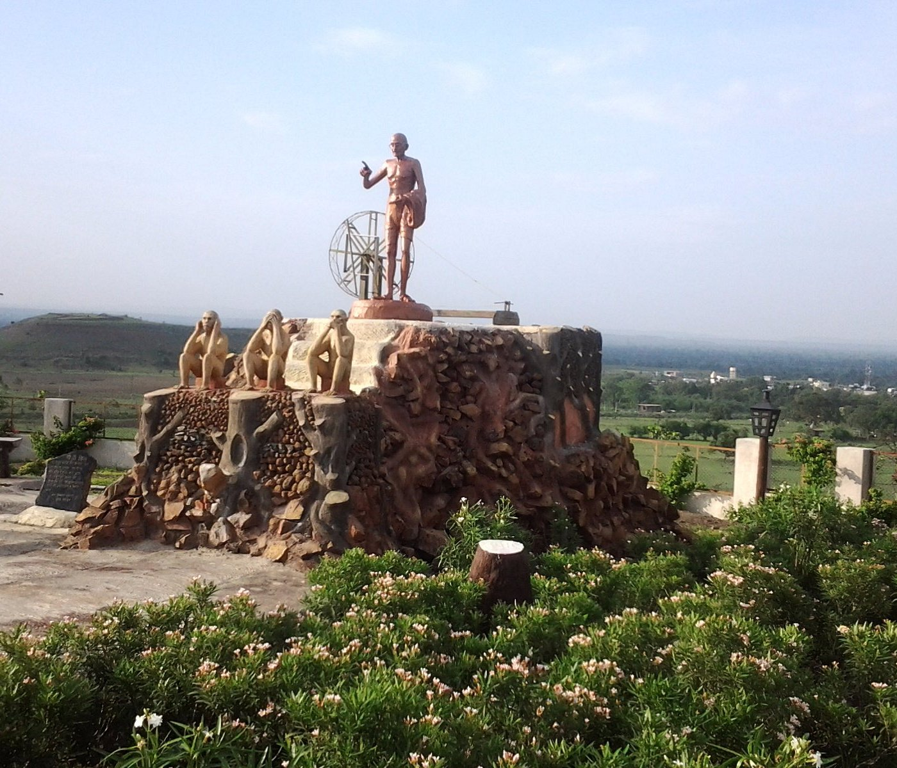

About Me
Hello! I'm Chaitanya Soni, currently a freshman pursuing CGD at IIIT Hyderabad. I enjoy exploring the intersection of technology and creativity. While I'm developing my technical skills, including C, C++, assembly, and web basics (HTML, CSS, JS), I'm particularly drawn to the challenges and possibilities within computer science. I wouldn't describe myself as a front-end developer, but I appreciate understanding how different technologies work together.
From My Birthplace: Wardha, Maharashtra

Outside of academics, I like playing chess and reading books. Feel free to browse my education details or current skills!